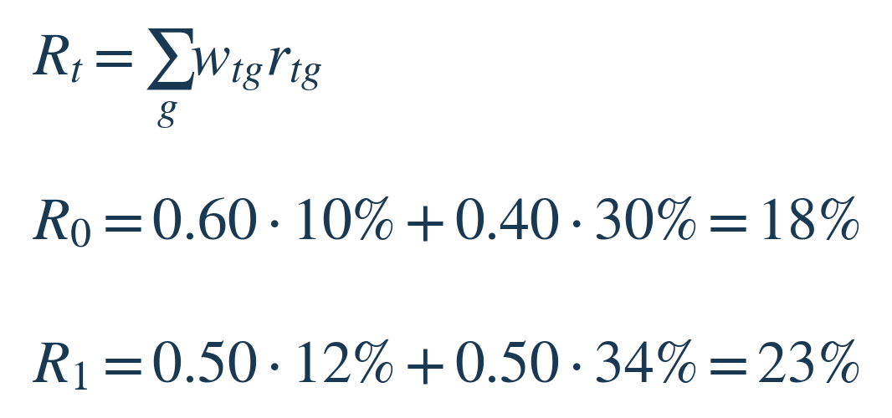
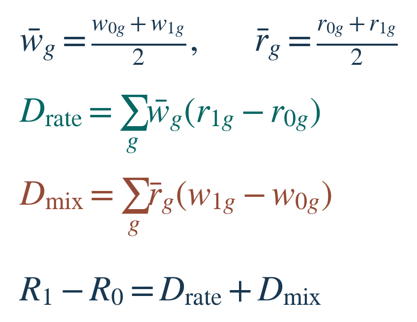
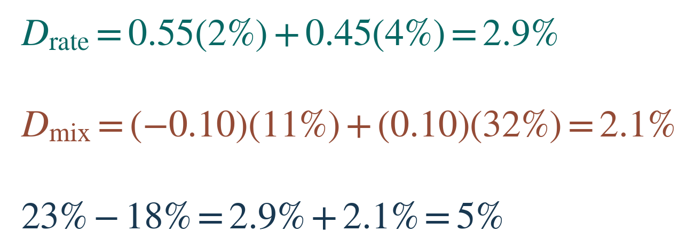
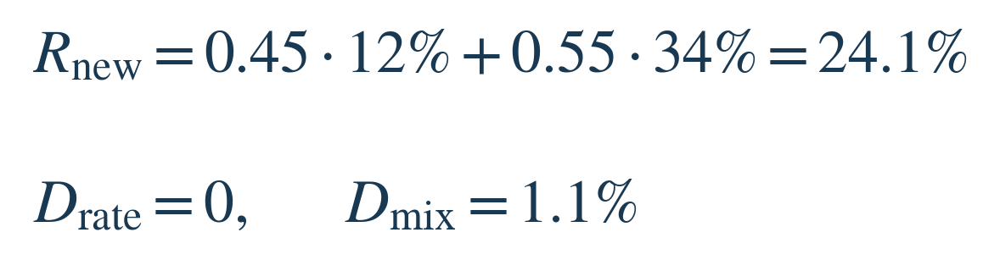

一家网店的总体转化率从 18% 升到 23%。两件事同时发生：各组访客更容易下单，高转化的回访流量也比以前多了。现在想把这 5 个百分点拆成两笔：组里的转化率变了多少，流量构成又贡献了多少。以下是教学数据，不来自真实实验。
先写出总率是怎样拼成的
把每次访问分到互斥且覆盖全部流量的两组：新客、回访客。转化口径固定为这次访问是否下单。组内率用该组访问作分母，组占比用全部访问作分母；组占比乘组内率恰好是该组下单访问占全部访问的比例，再把各组加起来。
| 组别 | 旧期占比 / 转化率 | 新期占比 / 转化率 |
|---|---|---|
| 新客 | 60% / 10% | 50% / 12% |
| 回访客 | 40% / 30% | 50% / 34% |
记 t 为时期（0 是旧期，1 是新期），g 为组别；w 是组占比，r 是组内率，R 是总体率。各组使用同一计量单位，w 在每期相加为 1。


每次只换一样，再把两条路径平均
为了分别量出这两项，做两次纸上替换。一次只拿新期的组内率；另一次只拿新期的组占比。两种组合只是用于算账，不是实际发生的中间状态。
| 用哪期的占比 | 配旧期组内率 | 配新期组内率 |
|---|---|---|
| 旧期 | 18%（实际） | 20.8% |
| 新期 | 20% | 23%（实际） |
先换率：沿第一行从 18% 到 20.8%，组内贡献 2.8 个百分点；再换占比到 23%，构成贡献 2.2 个百分点。反过来，先沿第一列从 18% 到 20%，构成贡献 2.0 个百分点；再换率到 23%，组内贡献 3.0 个百分点。组内水平和占比都变时，先换哪一项，会改变另一项计算时的权重。
若希望新旧两期地位对称，可以把两条路径等权平均。换组内率时，一条路径把各组率差乘旧占比，另一条乘新占比，平均后就用两期的平均占比。换占比时同理，用两期的平均组内率。横线表示两期平均，两个 D 分别是组内率和构成的贡献，都是有正负的总率差。每条路径都从同一个 18% 到同一个 23%，因此平均之后两笔仍精确加回总差。




本例中，新客占比下降 10 个百分点，回访客占比上升 10 个百分点。把这 10 个百分点从平均转化率 11% 的组挪到平均转化率 32% 的组，单凭这一变化就多出 2.1 个百分点。若两组平均率相同，同样的占比变化不会改变总率。
在哪些问题上能直接复用
在公共卫生里，可以把 g 换成年龄组，w 换成人口占比，r 换成年龄别死亡率。同样是乘积求和：地区的粗死亡率既受年龄别死亡率影响，也受年龄结构影响。比较两地时，固定同一年龄构成可得标准化的率差；若要把原始总差加回去，就再单列构成贡献。
在工厂质检里，g 可以是产品型号，w 是各型号占全部检验件的比例，r 是该型号的不合格率。同一批产品组合可让组内差异可比；用各期实际组合算出的总不合格率仍有用，两种数字回答的问题不同。
这和用逆方差挑选融合权重不同：这里的权重来自每期实际分母，目标是拆开已有统计量，不是压低估计方差。分组边界和转化定义需要一致，每期都要能估计所使用的组内率；某组没有样本，不能把缺失的率填成 0。也不要把两项当成因果效应，尤其当分组本身会受产品改动影响。AUC 依赖正负样本配对，单纯用各组样本占比乘组内 AUC 一般加不回总体 AUC。
试一笔
以上面的新期为参照。下一期两组转化率不动，回访客占比从 50% 增到 55%，新客占比相应下降。总体转化率是多少？新增变化应记在哪一笔？
做完再看：练习答案
新总率 24.1%，比 23% 高 1.1 个百分点。两组的转化率都没变，组内率贡献为 0；全部变化来自构成。直接核对：把 5 个百分点的访问挪到转化率高 22 个百分点的一组，增量就是 0.05 × 0.22。

